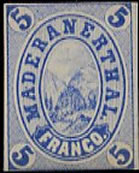
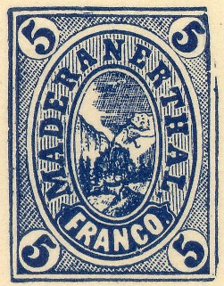
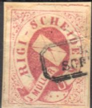
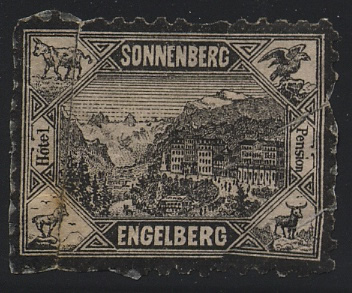
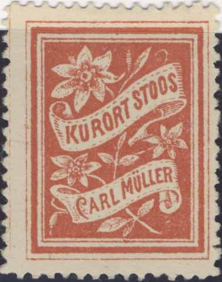

(Reduced sizes)
Return To Catalogue - Switzerland
Note: on my website many of the
pictures can not be seen! They are of course present in the
catalogue;
contact me if you want to purchase the catalogue.
In the swiss mountains, remoted hotels often issued their own stamps to carry the post from the hotel to the nearest post office, examples are Rigi Kaltbad, Belalp, Maderanerthal, Rigi Scheideck etc. In September 1883 the use of these stamps was forbidden by the government (but some hotels still issued labels). All these stamps have been heavily forged.
Does anybody have more information on the forgeries of this area?
(Reduced sizes)
(reduced size)
5 c violet (with crosses in the oval) 5 c violet (with stars in the oval, 1876) 5 c violet (with values inside the oval)

Reduced size
Red stamps or green stamps as shown here are reprints. These were actually made by the printer G.Cuenod in Vevey, who kept the stones and made these reprints in 1887 (source: 'Some Curious Weeds' No. 9, Linn's July 13, 1964, 109).
Another 'reprint' made in 1973, minisheet with two stamps, inscription 'MARKEN DER SCHWEIZ HOTELPOSTEN 100 Jahre HOTEOMARKEN BELALP 1873 1973':
(Reduced size)



(Reduced sizes)
5 c blue (imperforate)
Three types exist. The first one (with dot behind
'MADERANERTHAL' and behind 'FRANCO') was issued in 1870. The
second type (without dot behind 'MADERANERTHAL', slightly
different view) was issued in 1871. The third type (no dots
behind 'MADERANERTHAL' and 'FRANCO') was issued in 1872. The
fourth type of 1874 has a taller 'FRANCO' and a white sky. This
last type exists with perforation 11 (1875). The stamps remained
uncancelled or received a pen cancel.
Source: 'Maderanthal' by Peter Kelley in The Swiss Philatelist,
no 51/52/53 London, 1968, edited by H.L.Katcher.
Advertisement label of 1885 after the hotel post was forbidden by
the authorities in 1883.
Another label (inscription 'EXTRA DIENST') of 1886?
Forgeries exist, example:

A Fournier forgery of the 'EXTRA
DIENST' and 'FRANCO' stamps, Fournier probably did not use this
image to sell forgeries, but to illustrate his pricelists. This
image is taken from the 'Fournier Album of Philatelic Forgeries.
The first forgery has the first 'R' of 'MADERANER' inverted.

5 c green
In same design, but no value indicated are labels.

5 c blue
Similar designs, but no value are labels.

(15 c) red (15 c) violet
I've been told that this is a forgery, the design is slightly
different, notably the stars left and right which have only 4
rays, reduced size
10 c red and blue
Forgeries:
The following text was found in The Philatelist Vol X' 1876, page 15 concerning forgeries of this stamp:
COLLECTORS AND DEALERS BEWARE OF HEINRICH
BAUMER!
To the Editor of "The Philatelist."
Dear Sir, — An English dealer has kindly forwarded for my
inspection some Zurich stamps, 4 and 6 rappen, Orts-Post, Poste-
Locale, Winterthur, and a whole sheet of Rigi Coulm, all of which
have turned out to be forgeries. The Zurich being very well
executed, it is a pity the forger cannot be executed also. I
cannot say for certain that
HEINRICH BAUMER
of Olten, Switzerland, is the forger of the above stamps, but the
fact is certain that he sells forgeries; perhaps he gets them
second- hand from
ENGELHARDT FOHL,
of Riesa, Saxony, whose character ought by this time to be well
known to him. The Rigi Coulm greatly resemble the genuine,
provided you look at the genuine from the back of the stamp. In
the genuine the stem of the flower is turned to the left; in the
forgery to the right. Besides, the facial value of the genuine
sheet (six horizontal rows of five stamps) is 2/6, and the
wholesale price of the forgery 1/6 only.
To conclude, I recommend to the special notice of collectors and
dealers Heinrich Baumer, hoping they will not forget at the same
time his worthy confrère Engelhardt Fohl, the notorious forger
of postage stamps whom I had great pleasure in exposing in The
Stamp-Collectors Magazine for November, 1874.
H. A. DE JOANNIS. London.


red green blue
(other labels, inscription 'KURORT RIGI-SCHEIDECK HAUSER &
STIERLIN')

A Fournier forgery of the 'HAUSER
& STIERLIN RIGI SCHEIDECK' stamp, Fournier probably did not
use this image to sell forgeries, but to illustrate his
pricelists. This image is taken from the 'Fournier Album of
Philatelic Forgeries.
lilac red

black

violet
red
red blue green
Labels from Stoos:

'KURORT STOOS CARL MÜLLER' labels in blue and red
Labels from other hotels:
(Schreiber's Rigi Kulm Hotels)
('Hotel & Pension Piora', reduced size)

Another Piora-Thal label.


{kind=link}
{kind=link}
{kind=link}